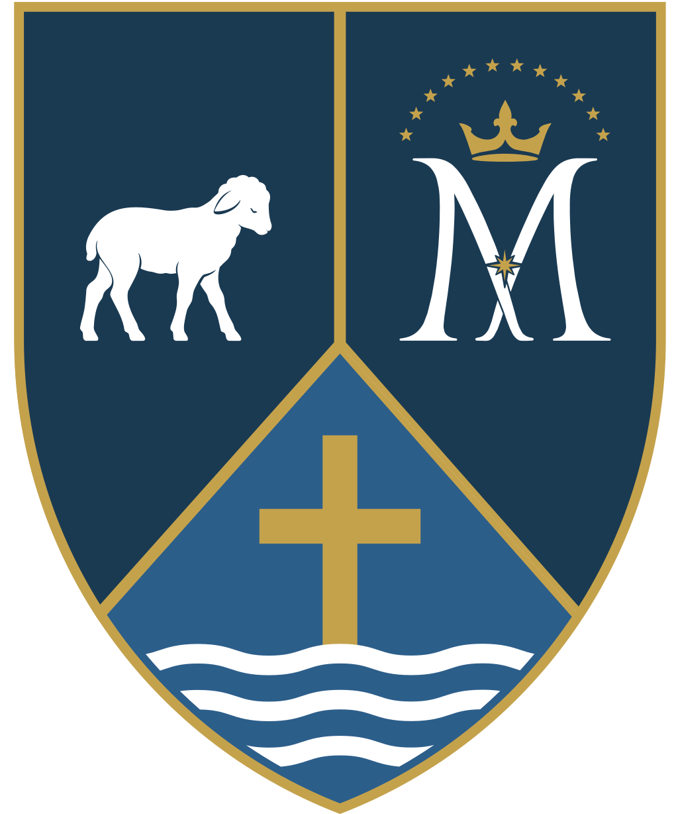

Two places, one faith
Two parishes, one family. Each community keeps its own history and character, and together we are more than either could be alone.
Catholics first gathered in these mountain valleys during the coal-mining boom of the 1880s, when the Northern Pacific Railway opened the upper Kittitas Valley and waves of immigrants from Italy, Croatia, Poland, and Ireland brought their faith to the Cascade foothills. Immaculate Conception parish was established in Roslyn in 1887, among the oldest in the Diocese of Yakima. The Catholic community in Cle Elum began as a mission of St. Andrew in Ellensburg that same decade, worshipping in homes and rented halls until their first church was built in 1902.
More than a century later, the two parishes still share a pastor, a sacramental life, and, as of 2026, a single visual identity. We are two places at one altar.

Our shared mark tells the same story the parishes live. St. John the Baptist points the way to Christ. Mary, his mother, stands beside the cross. The two churches gather around the same center.

St. John the Baptist
A parish built by miners.
Catholic immigrants who came to work the coal seams of the upper valley first worshipped as a mission of St. Andrew in Ellensburg. By 1902 they had built their first church, and in 1914 the mission became an independent parish under the patronage of St. John the Baptist.
On June 25, 1918, a catastrophic fire swept through Cle Elum, destroying the church and rectory along with much of the city. The present brick church, with its distinctive wooden belfry, was built in 1921 and has served the parish ever since, the spiritual home of generations of mining families, ranchers, retirees, and newcomers who call the valley home.
Visit the St. John the Baptist pageImmaculate Conception
The older of our two parishes.
Roslyn was founded in 1886 as a coal-mining company town, and its Catholic families were among its earliest settlers. The parish was established in 1887, among the oldest in the Diocese of Yakima, and the church was completed in October 1888. Immaculate Conception Church and Rectory are contributing buildings to the Roslyn Historic District, placed on the National Register of Historic Places in 1978.
Badly damaged in the 2001 Nisqually earthquake, the church was carefully restored. In 2025, under Fr. Francisco Higuera, the parish completed a major historic restoration, renewing plaster, decorative painting, original artwork, woodwork, and lighting, and reopened the church in time for Christmas, preserving Roslyn's Catholic and immigrant heritage for the next generation.
Visit the Immaculate Conception page
Part of the Diocese of Yakima
St. John the Baptist and Immaculate Conception are Roman Catholic parishes in full communion with the Holy See and the Diocese of Yakima. We are not an independent or breakaway congregation. This is the same Catholic Church you would find anywhere in the world, led locally by the Most Reverend Joseph J. Tyson, Bishop of Yakima, and united with our Holy Father, Pope Leo XIV, in Rome. The Diocese of Yakima serves central Washington and the wider Church we belong to.
Father Francisco serves both parishes as our one shared pastor, celebrating daily and Sunday Mass across two churches, leading OCIA, preparing couples for marriage, and accompanying our community through every sacrament and season. To reach him, call the parish office at (509) 674-2531, ext. 5.